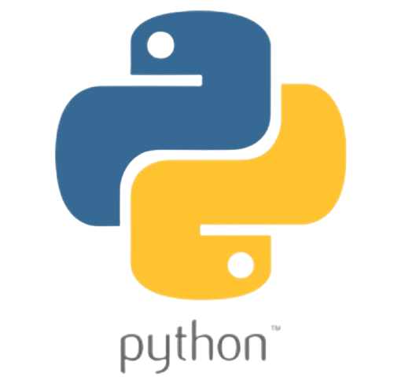

Education & Skills

저는 Python, Java를 주 언어로 쓰고 SQL, C#, lua, JavaSciprt, C/C++ 등도 사용해요.
백앤드-프론트앤드, 데이터베이스, 정보보안, 디스코드 봇 개발 등을 다양한 분야도 공부했어요.

운영체재로는 리눅스와 우분투 그리고 칼리 리눅스도 배우고 있고 사용하고 있어요.


프로그래밍을 할때는 Visual Studio, Visual Studio Code, Intellij를 사용 하고 있어요.
그리고 프로그래밍 뿐만 아니라 다른 분야에서도 필요한 툴들을 사용하고 있어요.


Notepad++, wireshark, Hex rays IDA
x64dbg, mysql, ghidra
위와 같은 툴 등 여러 툴들도 배우고 사용하고 있어요.